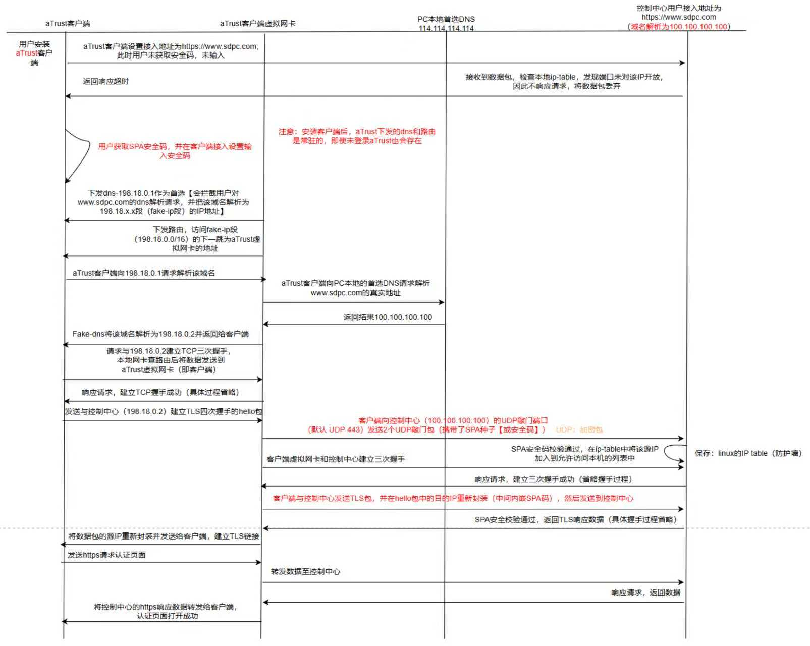

aTrust的SPA技术
SPA（单包授权）技术
功能概述
SPA（Single Packet Authorization）即单包授权，是SDP（软件定义边界）的核心功能。通过对连接服务器的所有数据包进行认证授权，服务器认证通过之后，才会响应连接请求。以此实现企业业务的网络隐身，从网络上无法连接、无法扫描。
SPA提供的安全作用：
- 保护服务器：在提供真正的SPA之前，服务器不会响应来自任何客户端的任何连接，且端口也不会被探测到（无法扫描到aTrust对外暴露的端口），真正的做到了端口隐藏。
- 缓解拒绝服务攻击：面向互联网运行HTTPS协议的服务器极易受到拒绝服务（DoS）攻击。SPA可以缓解这些攻击，因为它允许服务器在进入TLS之前放弃TLS DoS尝试
SPA的需求范围包括：
- 互联网环境接入时，防止非法人员接入
- 企业有大量分公司员工在内网环境接入，希望可以增强内网接入安全
零信任aTrust支持基于第二代TCP的SPA技术，也支持第三代基于TCP+UDP的SPA技术。
- 第二代SPA技术，能防7层DOS攻击，但无法防止4层DOS攻击。
- 第三代SPA技术，能有效的防护4层DOS攻击，隐藏设备对外暴露的端口，保证端口不被扫描到。使用第三代SPA技术时，需将控制中心和代理网关对外暴露的端口以TCP和UDP协议映射至公网，如下举例。
- 第四代SPA技术，考虑到了安全码的安全性。
| 设备 | 内网端口 | 映射协议 | 外网端口 | 备注 |
|---|---|---|---|---|
| 控制中心 | 443 | TCP | 443 | 用户接入认证端口，默认443，端口可改，一对一映射 |
| 443 | UDP | 443 | UDP敲门端口，一对一映射 | |
| 443 | TCP | 443 | WEB应用访问端口，默认443，端口可改，一对一映射 | |
| 代理网关 | 443 | UDP | 443 | UDP敲门端口，一对一映射 |
| 441 | TCP | 441 | 隧道应用访问端口，一对一映射 | |
| 441 | UDP | 441 | UDP敲门端口，一对一映射 |
配置相关
管理员登录控制中心控制台：
- 进入系统管理，配置客户端接入设置，配置用户认证接入地址。
创建短信网关：
- 进入系统管理，系统配置，短信网关，点击新增创建短信网关。
配置SPA安全码模式：
- 进入安全中心，服务隐身，安全码管理，配置SPA安全码模式，关联短信网关，并分发给用户。
开启SPA服务隐身功能：
- 进入安全中心，服务隐身，安全码管理，开启SPA服务隐身功能，并配置控制中心接入地址、代理网关接入地址和源IP地址白名单。
填写UDP敲门地址：
- 进入系统管理，代理网关管理，在所在区域点击编辑，填写UDP敲门地址。
注：源IP地址白名单一定要放通管理地址和直连网段。
SPA认证原理

注意事项
- 启用UDP敲门，需同时将要隐藏的服务器端口在公网上做TCP和UDP协议的端口映射，否则将无法访问；
- 集群从设备真实IP不支持SPA；
- 前置负载均衡场景不支持UDP SPA，支持TCP敲门；
- 服务端收到第一次成功敲门包和异常包暂不支持上传到审计中心（可以查看后台spad.log日志）；
- 不支持对控制台端口4433，SSH端口22和集群端口进行端口隐藏；
- 集群场景下端口隐藏，请将主从节点ip填入保护地址中；
- 启用UDP敲门后，需确保终端时间和服务器时间相差小于5分钟才能访问。
- 服务器UDP敲门功能关闭，安全专属客户端仍然会发送UDP敲门包；
- 银河麒麟系统上通过安装器安装时获取不到SPA安全码，需通过添加白名单的方式下发SPA种子；
- 关闭UDP敲门后sdp-spad服务会自动关闭，开启UDP敲门后sdp-spad会自动开启；
- 开启SPA后，安装SPA客户端连接控制中心失败时，请注意终端时间和服务器时间相差是否大于8个小时，清除浏览器缓存并重新打开portal或应用中心界面；
- 修改自动敲门周期后，需要用户重新登录才能生效；
- 开启UDP敲门，安装SPA客户端后，首次连接控制中心和登录可能会等待较长时间（10s左右）。
本博客所有文章除特别声明外，均采用 CC BY-NC-SA 4.0 许可协议。转载请注明来源 沐风的blog！
评论